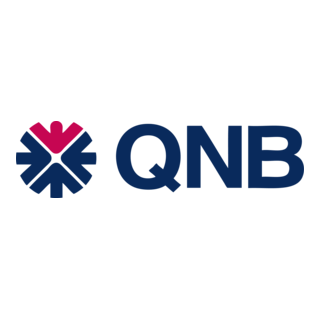

Case Study: Internship Experience
Qatar National Bank: Retail Banking Internship
A 120-hour internship at one of Qatar's leading banks, spanning account services, digital banking platforms, and compliance training at a QNB branch in Doha.
Overview
Over 120 hours at a QNB branch in Doha, I worked across account services and day-to-day banking operations, handling roughly 8 customers a day and coordinating with specialists across departments to resolve more than 30 customer enquiries during the internship. QNB's staff and my supervisor structured the training around three areas: hands-on customer service, the bank's digital platforms, and the compliance standards that keep both secure.
Banking Operations & Customer Service
Training covered QNB's full product line: savings and investment accounts, loans, checking accounts, and debit/credit cards, building the product knowledge needed to give customers accurate, useful guidance. Direct customer interaction followed, including card requests and digital banking support, where active listening, clear communication, and calm problem-solving turned out to matter more than any product manual.
Digital Banking & Technology
Two systems anchored daily operations: the customer-facing QNB mobile platform, and QNB Equation, the secure internal database protecting client information across every department. Learning both end to end showed how central digital tools have become to modern banking, and how much of a branch's daily workflow now runs through them rather than paper processes.
Compliance & Risk Management
A significant part of the training focused on regulatory compliance and risk management: verifying customer-provided information (paper and digital) carefully, making sure every document was properly signed and dated, and understanding how QNB's internal inspection team cross-checks employee records every three weeks to catch inconsistencies early. It reframed compliance not as paperwork, but as the mechanism that protects both the bank's reputation and customer trust.
Skills & Reflection
- Problem-solving & teamwork: navigating unfamiliar digital platforms was easier with senior staff support, reinforcing the value of asking for help rather than working around a blocker alone.
- Judgment under pressure: handling customers who provided inaccurate information, or attempted fraud, required rigorous identity verification balanced with patience and sensitivity.
- Adaptability: adjusting to a fast-paced, unfamiliar environment built resilience that carried into every task afterward.
- Relationship building: working alongside different colleagues across the branch strengthened both collaboration and the day-to-day working relationships that make a team function.
Connecting Coursework to Practice
Coursework from both my MIS major and Marketing minor mapped directly onto the internship: MIST 440 (Application Development) clarified how the bank's platforms were built and what they were built to do, while MIST 320 (Data and Information) explained the database infrastructure behind QNB Equation and how it supports day-to-day operations. Principles of Marketing and Consumer Behavior helped make sense of how the bank attracts and retains customers and tailors financial solutions to them. One gap I filled outside the classroom: basic Python and Java, picked up specifically to better understand how the bank's IT-built platforms actually worked under the hood.
Conclusion
The internship built a strong sense of professionalism, from daily punctuality to communicating clearly with colleagues and customers alike, and gave me firsthand exposure to how a bank branch actually runs end to end, from account management through direct client interaction. It also confirmed a genuine interest in the financial sector as a career path, backed now by real experience rather than just coursework.